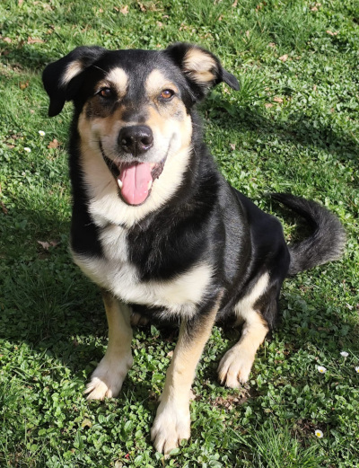
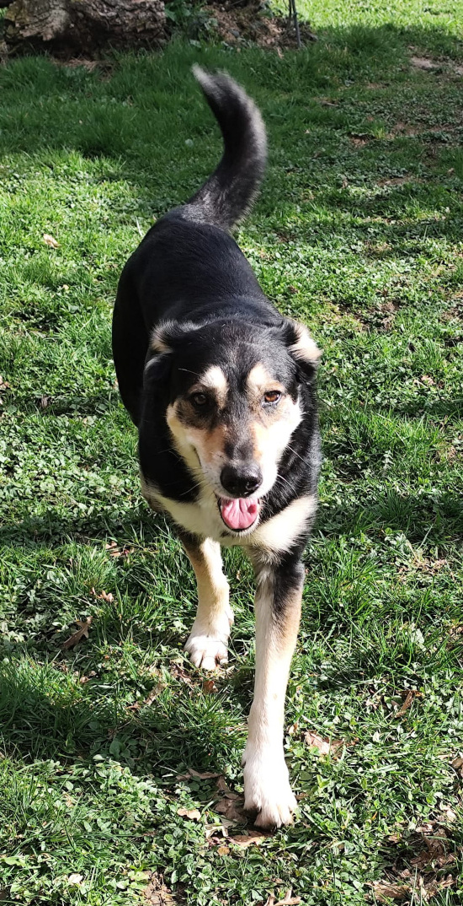
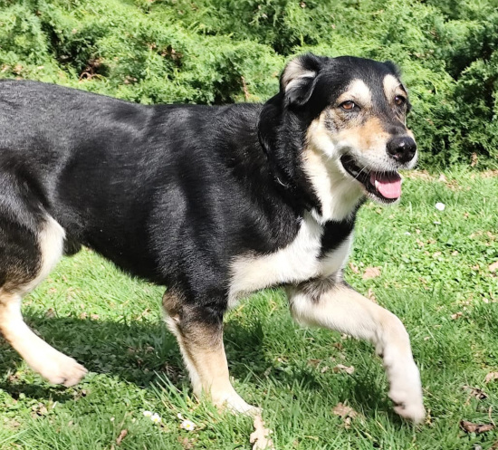

Zouzou
Salut moi c'est Zouzou, je suis un chien né en 2019 et pesant 28 kg (la nourriture est bonne chez ma tata 😅😊), je suis un joli croisement probablement entre un beauceron et un bouvier suisse.
Cela me confère un caractère assez têtu mais extrêmement intelligent ce qui me permet d'apprendre très vite. 🤓
Mon histoire comme beaucoup de mes congénères est triste. J'ai été trouvé errant depuis plusieurs semaines suite à mon abandon (vers mes 5 ans), bien sûr non identifié et jamais réclamé 😕.
Comme j'ai manqué de nourriture et d'interactions humaines j'avais tendance à mon arrivée à faire un petit peu de protection de ressources mais je me suis bien amélioré depuis et je n'en fais plus ! 😁
J'ai été pris en charge par l'association et placé en famille d'accueil chez ma tata.
J'ai beaucoup progressé mais pour autant j'aurai encore besoin d'un peu de travail sur la gestion de mes émotions.
Je suis super collant avec ma tata 🥰 en qui j'ai pris confiance. Cependant avec les autres personnes il me faut un temps d'adaptation car je suis méfiant par rapport à mon passé avec les humains.
Dans l'idéal il me faudrait une famille qui puisse me sortir pendant de longues balades et qu'il y ai un grand jardin clos. Quand je pars en voiture pour les promenades ou aller chez le docteur ce n'est pas un problème j'aime bien. En balade je suis totalement ok chien même si je ne les connais pas. Souvent quand les autres chiens m'ignorent, j'en fais autant et continue mon chemin tranquillement.😀
Il faudra éviter de me laisser seul trop longtemps car cela me stresse beaucoup. Pour autant je n'abîme jamais rien dans la maison.
L'idéal serait également qu'il n'y ait pas d'enfant ou éventuellement un adolescent car je suis exclusif avec mon humain.
Pour ce qui est des chats avec moi pour l'instant on oublie mais je vais y travailler avec les tatas. En règle générale je m'entends bien avec mes congénères au quotidien moyennant que ce soit un animal calme et bien dans ses patounes et que les présentations soient faites correctement. Actuellement ma tata a un berger mâle castré avec qui je vis dans la maison.
De par mon croisement je suis un excellent gardien et j' aboie beaucoup quand je suis dans le jardin pour prévenir qu'il y a du monde 😉(je suis une petite alarme à détection d'intru mais une fois les personnes rentrées dans le jardin je m'arrête directement 😂).
J'ai donc encore pas mal de petites choses à apprendre mais aussi beaucoup de belles surprises. J'ai aussi plein de merveilleux moments à vous offrir avec une bonne dose de câlin 😍. Alors si l'aventure vous tente avec moi et que vous m'acceptez comme je suis j'aurais plein d'amour à vous offrir. Je serai aussi très généreux en câlins et d'une fidélité hors pair 🥰
N'hésitez pas à venir me rencontrer et contacter l'association et ma tata qui se feront un plaisir de vous donner plus de détails. ❤️
En Résumé
- Mâle de 28Kg
- 01/01/2019
- Aboie après les voitures (pas en ballade)
- Adoption à 280 euros
Son caractère
- apprend vite
- câlin (avec son humain)
- énergique
Actuellement
- Stérilisé
- Vermifugé et déparasité
- Vacciné
- Visible à Saint-Sébastien (23160)

